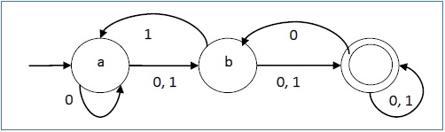
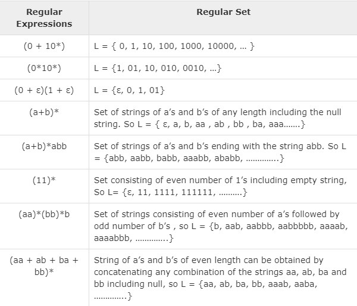
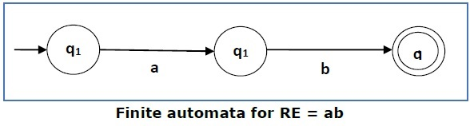
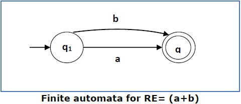
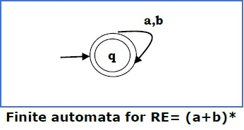
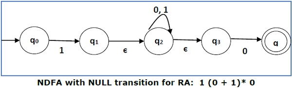
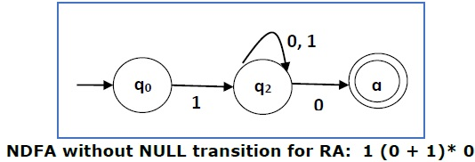

Non-deterministic Finite Automaton
In NDFA, for a particular input symbol, the machine can move to any combination of the states in the machine. In other words, the exact state to which the machine moves cannot be determined. Hence, it is called Non-deterministic Automaton. As it has finite number of states, the machine is called Non-deterministic Finite Machine or Non-deterministic Finite Automaton.
Formal Definition of an NDFA
An NDFA can be represented by a 5-tuple (Q, ∑, δ, q0, F) where −
- Q is a finite set of states.
- ∑ is a finite set of symbols called the alphabets.
- δ is the transition function where δ: Q × ∑ → 2Q (Here the power set of Q (2Q) has been taken because in case of NDFA, from a state, transition can occur to any combination of Q states)
- q0 is the initial state from where any input is processed (q0 ∈ Q).
- F is a set of final state/states of Q (F ⊆ Q).
Graphical Representation of an NDFA: (same as DFA)
An NDFA is represented by digraphs called state diagram.
- The vertices represent the states.
- The arcs labeled with an input alphabet show the transitions.
- The initial state is denoted by an empty single incoming arc.
- The final state is indicated by double circles.
Its graphical representation would be as follows −
Regular Expressions
A Regular Expression can be recursively defined as follows −
- ε is a Regular Expression indicates the language containing an empty string. (L (ε) = {ε})
- φ is a Regular Expression denoting an empty language. (L (φ) = { })
- x is a Regular Expression where L = {x}
- If X is a Regular Expression denoting the language L(X) and Y is a Regular Expression denoting the language L(Y), then - X + Y is a Regular Expression corresponding to the language L(X) ∪ L(Y) where L(X+Y) = L(X) ∪ L(Y). - X . Y is a Regular Expression corresponding to the language L(X) . L(Y) where L(X.Y) = L(X) . L(Y) - R* is a Regular Expression corresponding to the language L(R*)where L(R*) = (L(R))*
- If we apply any of the rules several times from 1 to 5, they are Regular Expressions.
Some Re Examples
Construction of an FA from an RE
We can use Thompson's Construction to find out a Finite Automaton from a Regular Expression. We will reduce the regular expression into smallest regular expressions and converting these to NFA and finally to DFA. Some basic RA expressions are the following −
Case 1 − For a regular expression ‘a’, we can construct the following FA −

Case 2 − For a regular expression ‘ab’, we can construct the following FA −
Case 3 − For a regular expression (a+b), we can construct the following FA −
Case 4 − For a regular expression (a+b)*, we can construct the following FA −
Method
Step 1 Construct an NFA with Null moves from the given regular expression.
Step 2 Remove Null transition from the NFA and convert it into its equivalent DFA.
Problem
Convert the following RA into its equivalent 1 (0 + 1)* 0
Solution
We will concatenate three expressions "1", "(0 + 1)*" and "0"
Now we will remove the ε transitions. After we remove the ε transitions from the NDFA, we get the following −
It is an NDFA corresponding to the RE − 1 (0 + 1)* 0. If you want to convert it into a DFA, apply the method of converting NDFA to DFA simply .